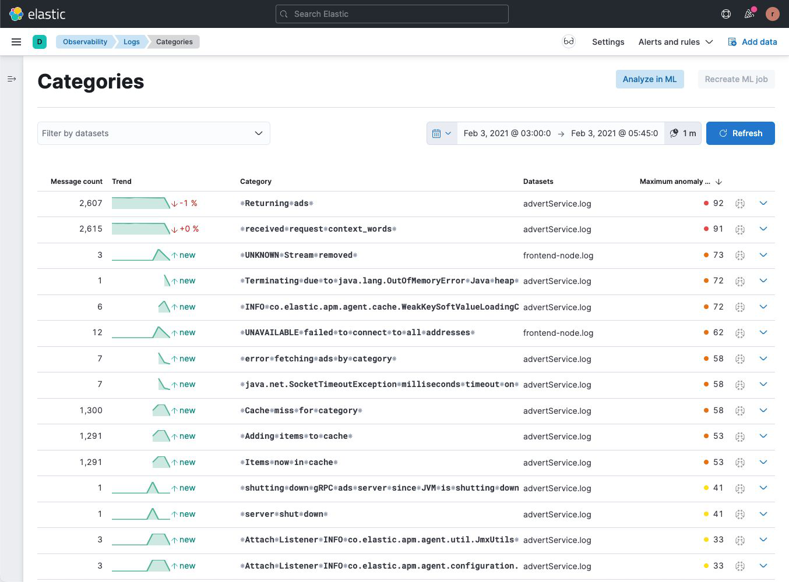

Log analytics●AI-powered log categorization and anomaly detection to quickly make sense of billions of logs●Powerful cross cluster search with superior speed, scale and relevance●Efficient data tiering allowing you to keep all the data you need●Context and correlation across all signals (logs, metrics, traces & business data)●Full text search on indexed data - in milliseconds, not minutes!